Economic consulting
Deployed an internal document-supported assistant for a Boston-area consulting firm that helped analysts move reports faster while protecting data privacy requirements.
We help enterprise teams automate manual workflows with practical AI and custom software.
fol. 02 — Marginal note
Automation should make work easier to trust, not harder to explain.
Exhibit A
RR-1042 is ordinary paperwork — and an honest record of where a team’s week actually goes.
01 — Map
We chart how requests actually travel through your organization — intake, triage, review, approval — before any tool enters the conversation.
02 — Name
Usually one step absorbs the delay: a manual review that repeats, waits, and wears people down. We name it plainly.
03 — Route
Software and practical AI take on the repeat steps — drafting, sorting, reconciling — under the controls your team already trusts.
04 — Trust
Human judgment stays in the loop, with a clear record of what was automated and why it is safe to rely on.
Durable application and data foundations for teams that need automation to connect with existing internal systems.
Filed under · FoundationsAI assistance for workflows that still depend on manual review, judgment, and clear accountability.
Filed under · AssistanceFocused tools built around the specific handoffs, approvals, and repeat steps inside your organization.
Filed under · ToolingAutomation patterns that keep permissions, auditability, and human review visible.
Filed under · ControlsDashboards and reporting that show where work stalls, repeats, or waits for review.
Filed under · ReportingStepwise improvements to internal processes without forcing a broad platform change before the work is understood.
Filed under · ProcessDeployed an internal document-supported assistant for a Boston-area consulting firm that helped analysts move reports faster while protecting data privacy requirements.
Worked with a California ticket vendor to create custom email annotation software that reduced repeat review work for management.
Working with a high-end hotel chain based in Southern California to automate pricing, labor assignment, and reporting workflows.

fol. 06 — Correspondence
Thirty minutes, no deck, no pitch. Bring the workflow that wears your team down and we’ll talk through what’s worth automating — and what isn’t.
or write to sales@katytechnologies.com